vamos ver e entender quais são os times,sua história e como o campeonato funciona
A National Basketball Association (NBA) é a principal liga de basquete profissional do mundo, fundada em 1946. Composta por 30 franquias dos Estados Unidos e uma do Canadá, a liga reúne os melhores atletas do planeta e movimenta bilhões de dólares anualmente, com fãs em todos os continentes.
A NBA é dividida em duas grandes conferências, cada uma com 15 times. Por sua vez, cada conferência se subdivide em três divisões de 5 equipes, baseadas principalmente na localização geográfica. Essa estrutura é essencial para definir a tabela de jogos e a classificação para os playoffs. Conferência Leste (Eastern Conference) Divisão Atlântico: Boston Celtics, Brooklyn Nets, New York Knicks, Philadelphia 76ers, Toronto Raptors. Divisão Central: Chicago Bulls, Cleveland Cavaliers, Detroit Pistons, Indiana Pacers, Milwaukee Bucks. Divisão Sudeste: Atlanta Hawks, Charlotte Hornets, Miami Heat, Orlando Magic, Washington Wizards. Conferência Leste (Eastern Conference) Divisão Atlântico: Boston Celtics, Brooklyn Nets, New York Knicks, Philadelphia 76ers, Toronto Raptors. Divisão Central: Chicago Bulls, Cleveland Cavaliers, Detroit Pistons, Indiana Pacers, Milwaukee Bucks. Divisão Sudeste: Atlanta Hawks, Charlotte Hornets, Miami Heat, Orlando Magic, Washington Wizards.
A temporada regular da NBA acontece geralmente entre outubro e abril. Cada uma das 30 equipes disputa 82 jogos no total, equilibrados da seguinte forma: 4 jogos contra cada adversário da mesma divisão (16 jogos). 4 jogos contra 6 times da mesma conferência, mas de divisões diferentes (24 jogos). 3 jogos contra os outros 4 times restantes da mesma conferência (12 jogos). 2 jogos contra cada time da conferência oposta (30 jogos). Ao fim desses 82 jogos, as equipes são ranqueadas em suas conferências. Os critérios de desempate levam em conta confronto direto, desempenho dentro da conferência, entre outros. Premiações importantes da temporada regular: O time com a melhor campanha geral leva vantagem de mando de quadra em todas as séries de playoffs. O troféu MVP (Most Valuable Player) é dado ao melhor jogador da temporada, além de prêmios como Defensor do Ano, Novato do Ano e Sexto Homem do Ano.
Antes dos playoffs tradicionais, a NBA introduziu o Play-In Tournament. Ele envolve as equipes que terminam a temporada regular entre a 7ª e a 10ª colocação de cada conferência. Funciona assim: Jogo 1: 7º colocado vs. 8º colocado. O vencedor garante a 7ª vaga nos playoffs. Jogo 2: 9º colocado vs. 10º colocado. O perdedor é eliminado; o vencedor avança. Jogo 3: Perdedor do Jogo 1 vs. Vencedor do Jogo 2. Quem vencer fica com a 8ª e última vaga nos playoffs. Assim, as posições 7 e 8 são definidas nesse mini torneio de vida ou morte, que acontece logo após o fim da temporada regular.
Os playoffs da NBA seguem o formato de eliminação direta, com 16 times (8 de cada conferência). Todas as séries são disputadas em melhor de 7 jogos (quem vencer 4 partidas primeiro avança). A ordem dos jogos em cada série é 2-2-1-1-1, ou seja, o time de melhor campanha joga em casa os jogos 1, 2, 5 e 7. Fases dos Playoffs dentro de cada conferência: Primeira Rodada (First Round): 1º vs. 8º, 2º vs. 7º, 3º vs. 6º, 4º vs. 5º. Semifinais de Conferência Finais de Conferência: o vencedor se torna o Campeão da Conferência (Leste ou Oeste) e avança para a grande final.
Os campeões do Leste e do Oeste se enfrentam nas NBA Finals, também em uma série melhor de 7 jogos. O time com a melhor campanha da temporada regular entre os dois finalistas tem o mando de quadra. O vencedor das Finais recebe o Troféu Larry O’Brien e o título de campeão da NBA. O melhor jogador da série fatura o prêmio Bill Russell de MVP das Finais
Duração: 4 quartos de 12 minutes cada (48 minutos totais). Em caso de empate, prorrogações de 5 minutos até haver um vencedor. Relógio de arremesso (Shot Clock): 24 segundos para a equipe atacante tentar um arremesso ao aro. Tempo para cruzar a quadra: 8 segundos para levar a bola do campo de defesa ao ataque. Regra dos 3 segundos: Um jogador de ataque não pode permanecer dentro da área restritiva do garrafão por mais de 3 segundos consecutivos. Faltas pessoais: Um jogador é excluído da partida ao cometer 6 faltas. Faltas coletivas (bônus): A partir da 5ª falta coletiva de uma equipe no quarto, o adversário cobra 2 lances livres a cada falta.
O equilíbrio competitivo é um dos pilares da NBA. Para isso, existem dois mecanismos centrais: Draft da NBA Realizado anualmente em junho, permite que as equipes selecionem novos jogadores vindos das universidades ou do cenário internacional. A ordem de escolha é definida por uma loteria entre os 14 times que não foram aos playoffs, dando aos piores colocados maiores chances de conseguir a primeira escolha. Isso ajuda a fortalecer as franquias mais fracas. Salary Cap (Teto Salarial) É o limite máximo que cada time pode gastar com os salários de seus jogadores. Existem exceções e o chamado luxury tax (multa para quem ultrapassa certos patamares), o que permite alguma flexibilidade, mas com penalidades financeiras severas para quem gasta muito acima do teto. O objetivo é impedir que as equipes mais ricas acumulem todos os astros.
No meio da temporada, a NBA realiza uma pausa para o All-Star Weekend, um grande festival do basquete que inclui: Jogo das Celebridades e Rising Stars Challenge (jogadores novatos e segundanistas). Skills Challenge, Torneio de 3 Pontos e Concurso de Enterradas no sábado. Jogo das Estrelas (All-Star Game): no domingo, reúne os 24 melhores jogadores da temporada, escolhidos por voto popular, jogadores e imprensa. Antigamente era Leste vs. Oeste; atualmente, dois capitães escolhem seus times independentemente da conferência, em um formato mais dinâmico.
A NBA é marcada por dinastias e rivalidades históricas. As franquias mais vitoriosas são: Boston Celtics e Los Angeles Lakers: 17 títulos cada (recorde compartilhado). Golden State Warriors: 7 títulos. Chicago Bulls: 6 títulos (todos na década de 1990 liderados por Michael Jordan). Rivalidades clássicas como Celtics vs. Lakers, Bulls vs. Pistons nos anos 90, ou Cavaliers vs. Warriors nos anos 2010, ajudam a escrever a história da liga e a paixão dos torcedores.

Fundado em 1946, é a franquia mais vitoriosa da história da NBA, com 18 títulos (o mais recente em 2024). Dominou a liga nos anos 1960 com Bill Russell (11 campeonatos em 13 anos) e voltou ao topo nos anos 1980 com Larry Bird. Joga no histórico TD Garden e tem como marca registrada a rivalidade eterna com os Lakers. Suas cores são verde e branco.
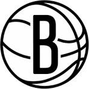
Criado em 1967 como New York Nets (na ABA), entrou na NBA in 1976. Após décadas em Nova Jersey, mudou-se para o Brooklyn em 2012. Apesar de nunca ter conquistado um título da NBA (ganhou dois na ABA com Julius Erving), montou supertimes com Jason Kidd nos anos 2000 e, mais recentemente, com Kevin Durant e Kyrie Irving. Manda seus jogos no Barclays Center, com as cores preto e branco.
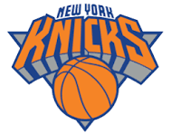
Fundado em 1946, é uma das franquias originais da liga e joga no mítico Madison Square Garden, no coração de Manhattan. Conquistou apenas 2 títulos (1970 e 1973), ambos liderados por Willis Reed e Walt Frazier. Conhecido por décadas de lealdade de sua enorme torcida, apesar de longos períodos de reconstrução. Suas cores são azul e laranja.
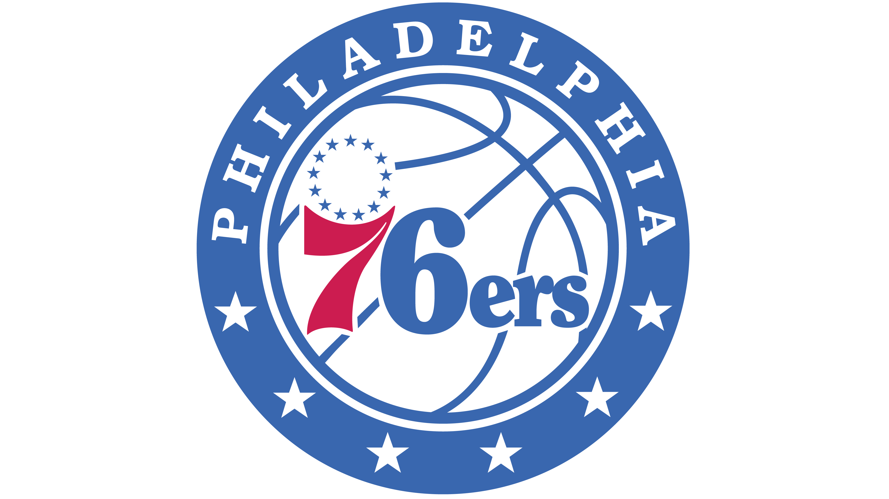
A franquia começou como Syracuse Nationals em 1946 e mudou-se para a Filadélfia em 1963. Tem 3 títulos: 1955 (ainda como Nationals), 1967 e 1983. Wilt Chamberlain, Julius Erving, Moses Malone, Allen Iverson e Joel Embiid são alguns dos grandes nomes que vestiram a camisa. Joga no Wells Fargo Center e tem as cores azul, vermelho e branco.
Criado em 1995 na expansão da NBA para o Canadá, é o único time fora dos Estados Unidos. Seu maior momento veio em 2019, quando conquistou seu primeiro e único título, liderado por Kawhi Leonard. Contou com astros como Vince Carter (que popularizou o time globalmente) e Kyle Lowry. Joga na Scotiabank Arena e tem como cores o vermelho e preto, com a icônica bola de basquete garras de dinossauro na identidade visual.
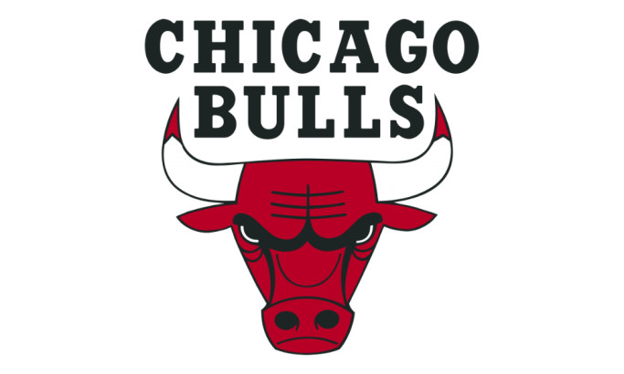
Fundado em 1966, tornou-se uma potência global nos anos 1990 ao ganhar 6 títulos (1991-1993 e 1996-1998), todos sob a liderança de Michael Jordan, Scottie Pippen e do técnico Phil Jackson. Dono de uma das marcas esportivas mais valiosas do mundo, joga no United Center e veste vermelho, preto e branco.
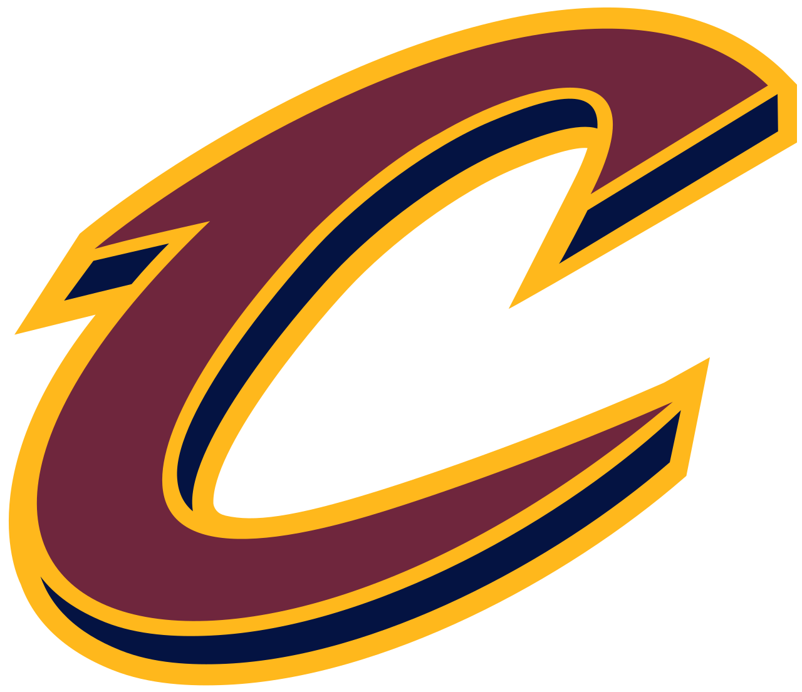
Criado em 1970, passou décadas em busca de um título. A conquista mais importante de sua história veio em 2016, quando, liderado por LeBron James, Kyrie Irving e Kevin Love, reverteu uma desvantagem de 3-1 nas Finais contra os Warriors – feito inédito na liga. Joga no Rocket Mortgage FieldHouse, com as cores vinho, dourado e marinho.
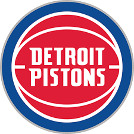
A franquia nasceu em Fort Wayne (Indiana) em 1941 e mudou-se para Detroit em 1957. Conquistou 3 títulos: 1989, 1990 (os "Bad Boys" de Isiah Thomas) e 2004 (equipe defensiva liderada por Chauncey Billups e Ben Wallace). Conhecida pelo estilo físico e pela rivalidade com os Bulls dos anos 90, joga no Little Caesars Arena, com azul, vermelho e prata.
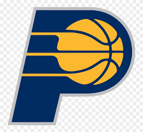
Fundado em 1967 na ABA, entrou na NBA em 1976 e nunca se mudou de cidade. Ganhou 3 títulos da ABA, mas ainda busca o primeiro troféu da NBA. Protagonizou grandes duelos nos anos 1990 e 2000, com Reggie Miller e os confrontos contra os Knicks e os Bulls. Manda seus jogos no Gainbridge Fieldhouse, nas cores azul marinho e dourado.
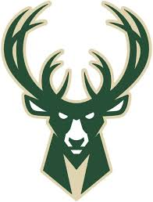
Criado em 1968, conquistou seu primeiro título em 1971 com Kareem Abdul-Jabbar (então Lew Alcindor) e Oscar Robertson. Após quase 50 anos, voltou ao topo em 2021 com Giannis Antetokounmpo, que entrou para a história com uma atuação de 50 pontos no jogo decisivo. Joga no Fiserv Forum e veste verde, creme e roxo.
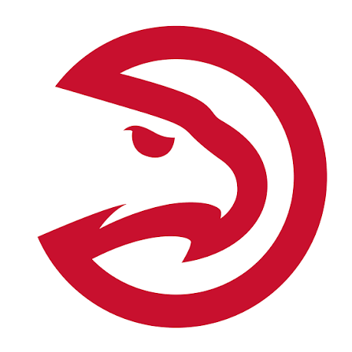
Fundado em 1946 como Buffalo Bisons, depois Tri-Cities Blackhawks, Milwaukee Hawks e St. Louis Hawks, fixou-se em Atlanta em 1968. Seu único título veio em 1958, ainda in St. Louis. Nos anos 1980, Dominique Wilkins foi o grande nome da franquia. Atualmente joga na State Farm Arena, com vermelho, preto e amarelo.
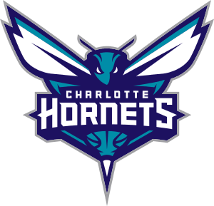
A história do basquete em Charlotte começou em 1988 com o primeiro Hornets, que depois se mudou para New Orleans. Em 2004, nasceu o Charlotte Bobcats, que resgatou o nome Hornets em 2014. A franquia ainda não conquistou títulos e nem mesmo chegou às finais de conferência. Seus maiores ídolos incluem Larry Johnson, Alonzo Mourning e Kemba Walker. Joga no Spectrum Center, com as cores verde-azulado (teal) e roxo.
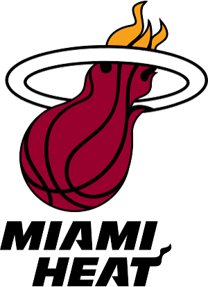
Criado em 1988, rapidamente se tornou um dos times mais competitivos da liga. Com 3 títulos (2006, 2012 e 2013), teve Dwyane Wade como estrela maior, ao lado de Shaquille O'Neal no primeiro campeonato e de LeBron James e Chris Bosh na "Era Big Three". Conhecido pela cultura de trabalho exigente e resistência física, joga no Kaseya Center e veste vermelho, preto e branco.
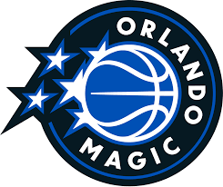
Fundado em 1989, teve seu auge nos anos 1990 com Shaquille O'Neal e Penny Hardaway, chegando às Finais de 1995. Depois, com Dwight Howard, voltou à decisão em 2009. Apesar de nunca ter vencido um título, revelou grandes talentos e tem uma torcida fiel no Amway Center. Suas cores são azul, preto e prata.
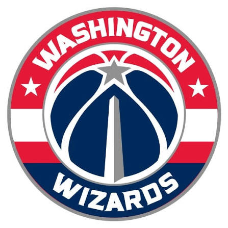
A franquia começou como Chicago Packers em 1961, passou por Baltimore e se estabeleceu em Washington, D.C. Seu único título veio em 1978 (ainda como Washington Bullets). Nos anos 2000, Gilbert Arenas liderou equipes empolgantes, e mais tarde John Wall e Bradley Beal formaram uma forte dupla. Joga na Capital One Arena, com vermelho, azul marinho e prata.
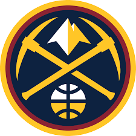
Fundado em 1967 na ABA como Denver Rockets, adotou o nome Nuggets em 1974 e entrou na NBA em 1976. Depois de décadas de jogo ofensivo empolgante, conquistou seu primeiro título em 2023, liderado por Nikola Jokić (duas vezes MVP) e Jamal Murray. A altitude de Denver sempre foi um fator diferencial para os adversários. Joga na Ball Arena, com azul marinho, dourado e vermelho.
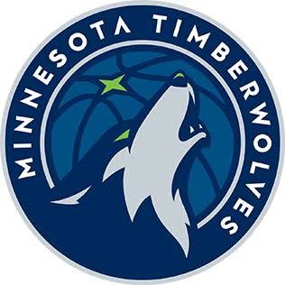
Criado em 1989, ainda busca seu primeiro título. Teve Kevin Garnett como maior ídolo (MVP em 2004, quando levou o time à final de conferência) e recentemente montou uma equipe jovem e competitiva com Anthony Edwards. Joga no Target Center, em Minneapolis, e tem as cores azul, verde e branco.
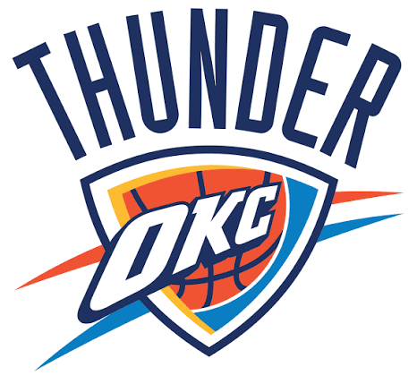
A franquia nasceu como Seattle SuperSonics em 1967, ganhou um título em 1979 e mudou-se para Oklahoma City em 2008. Na nova cidade, já foi às Finais em 2012 com Kevin Durant, Russell Westbrook e James Harden. Conhecida por acumular uma quantidade enorme de escolhas de draft, é uma das equipes mais promissoras da liga. Joga na Paycom Center, com azul, laranja e amarelo.
Fundado em 1970, conquistou seu único título em 1977 com Bill Walton. Ao longo das décadas, foi o time de Clyde Drexler, Brandon Roy, Damian Lillard e LaMarcus Aldridge. Conhecido pela torcida apaixonada e pelo ginásio barulhento, joga no Moda Center e veste vermelho, preto e prata.
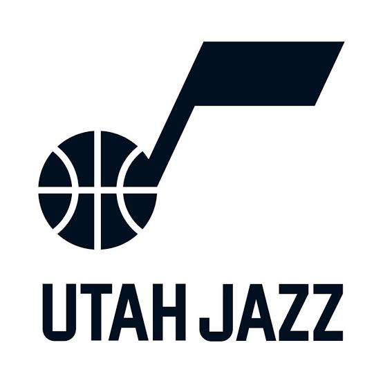
Originalmente New Orleans Jazz (1974), mudou-se para Salt Lake City em 1979. Nunca ganhou um título, mas chegou às Finais consecutivas em 1997 e 1998 com a lendária dupla John Stockton e Karl Malone, parando nos dois anos diante dos Bulls de Michael Jordan. Joga na Delta Center, com azul, amarelo e roxo (as icônicas cores das montanhas).
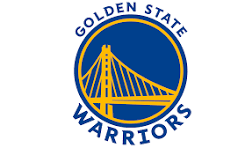
Fundado em 1946 na Filadélfia, mudou-se para a Califórnia em 1962. Com 7 títulos, o primeiro veio em 1947, ainda na Filadélfia. A era moderna de ouro aconteceu com Stephen Curry, Klay Thompson, Draymond Green e Kevin Durant, ganhando quatro campeonatos em oito anos (2015, 2017, 2018 e 2022). Joga no Chase Center, em San Francisco, com azul e dourado.
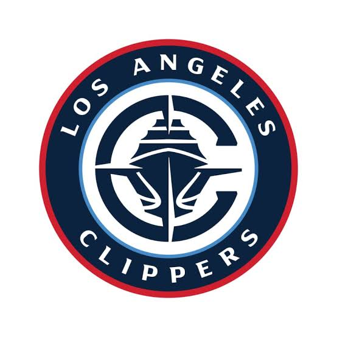
Criado em 1970 como Buffalo Braves, passou por San Diego antes de chegar a Los Angeles em 1984. Por décadas visto como o "irmão mais novo" dos Lakers, mudou de patamar nos anos 2010 com Chris Paul, Blake Griffin e DeAndre Jordan (a "Lob City"). Ainda não conquistou um título e nunca chegou às finais de conferência até recentemente. Joga na Intuit Dome, com azul, vermelho e preto.
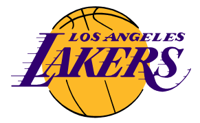
Uma das franquias mais icônicas do esporte mundial, nasceu em Minneapolis (1947) e mudou-se para Los Angeles em 1960. Seus 17 títulos estão espalhados por dinastias: George Mikan nos anos 1950, Magic Johnson e Kareem nos anos 1980 ("Showtime"), Kobe Bryant e Shaquille O'Neal no início dos anos 2000, e LeBron James com Anthony Davis em 2020. Joga na Crypto.com Arena, com púrpura e dourado.
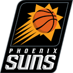
Fundado em 1968, tem uma história de ótimos times que bateram na trave, como as equipes de Charles Barkley (finais de 1993) e Steve Nash (MVP em 2005 e 2006). Chegou novamente às Finais in 2021 com Chris Paul e Devin Booker, mas ainda não conquistou o primeiro título. Manda seus jogos no Footprint Center, com roxo, laranja e preto.
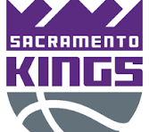
A franquia mais antiga da NBA (fundada em 1923 como Rochester Royals), ganhou um título em 1951 e passou por Cincinnati, Kansas City e Omaha antes de se estabelecer em Sacramento em 1985. Não vai aos playoffs desde 2006, mas tem uma das torcidas mais barulhentas e leais da liga no Golden 1 Center. Suas cores são roxo, preto e prata.
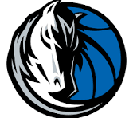
Criado em 1980, conquistou seu único título em 2011, numa campanha histórica liderada por Dirk Nowitzki, um dos maiores estrangeiros a jogar na NBA. Sob o comando do proprietário Mark Cuban, sempre manteve espírito competitivo. Mais recentemente, Luka Dončić assumiu o posto de grande estrela. Joga no American Airlines Center, com azul, prata e preto.
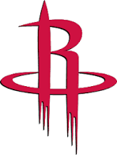
Fundado em 1967 em San Diego, mudou-se para Houston em 1971. Venceu dois campeonatos consecutivos, em 1994 e 1995, com Hakeem Olajuwon. Teve grandes momentos com Moses Malone, a era Yao Ming e Tracy McGrady, e times de alta octanagem ofensiva com James Harden. Joga no Toyota Center, nas cores vermelho, branco e prata.

Nascido em Vancouver em 1995, mudou-se para Memphis em 2001. Ainda não tem títulos, mas ficou marcado pelo estilo aguerrido do "Grit and Grind", com Marc Gasol, Zach Randolph, Mike Conley e Tony Allen, que levaram o time à final de conferência em 2013. Joga no FedExForum, com azul, azul claro e dourado.
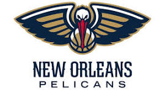
A franquia começou como Charlotte Hornets em 1988, mudou-se para New Orleans em 2002, e, após uma breve passagem por Oklahoma City por causa do furacão Katrina, renasceu como Pelicans em 2013. Não conquistou títulos. Teve Chris Paul e Anthony Davis como grandes estrelas, e hoje conta com Zion Williamson. Joga na Smoothie King Center, com azul marinho, dourado e vermelho.
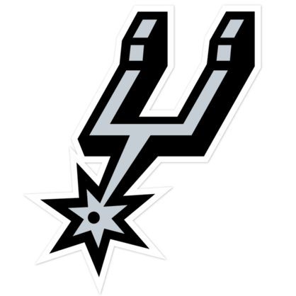
Modelo de consistência e excelência, foi fundado em 1967 na ABA e entrou na NBA em 1976. Seus 5 títulos (1999, 2003, 2005, 2007 e 2014) vieram sob a batuta do técnico Gregg Popovich e com astros como David Robinson, Tim Duncan, Tony Parker e Manu Ginóbili. Conhecido por sua cultura internacional e jogo coletivo, manda seus jogos no Frost Bank Center, com preto e prata.
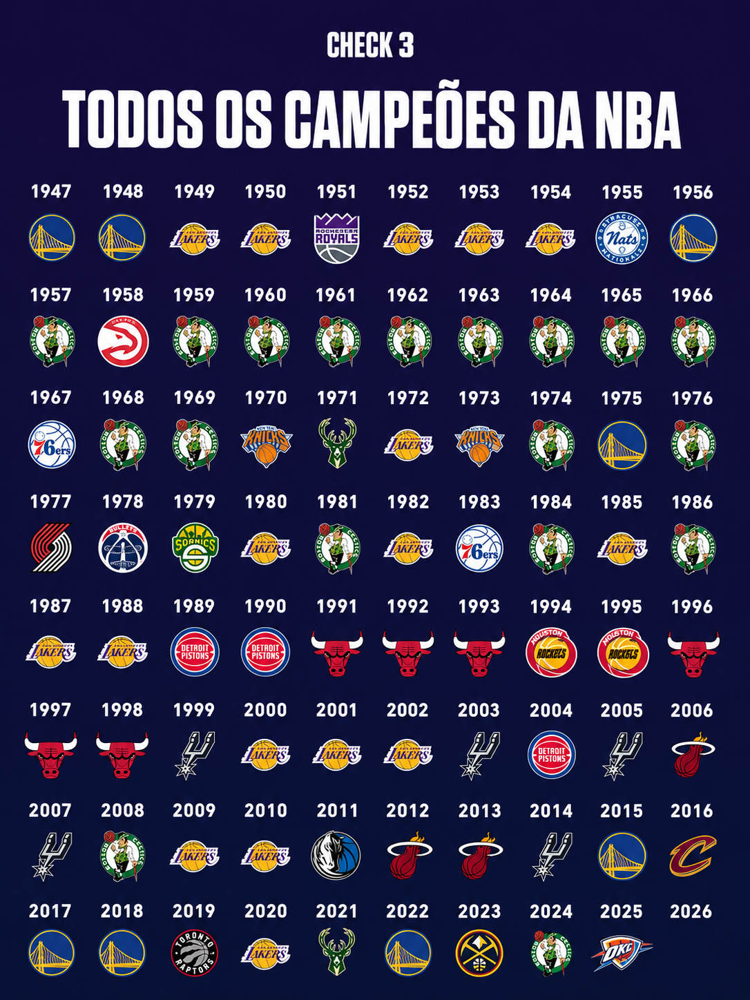